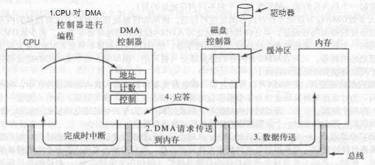

机械硬盘
盘片/盘面/磁头
硬盘中一般会有多个盘片组成，每个盘片包含两个面，每个盘面都对应地有一个读/写磁头。受到硬盘整体体积和生产成本的限制，盘片数量都受到限制，一般都在5片以内。盘片的编号自下向上从0开始，如最下边的盘片有0面和1面，再上一个盘片就编号为2面和3面。如下图：

扇区/磁道
下图显示的是一个盘面，盘面中一圈圈灰色同心圆为一条条磁道，从圆心向外画直线，可以将磁道划分为若干个弧段，每个磁道上一个弧段被称之为一个扇区（图践绿色部分）。扇区是磁盘的最小组成单元，通常是512字节。（由于不断提高磁盘的大小，部分厂商设定每个扇区的大小是4096字节）

磁头/柱面
硬盘通常由重叠的一组盘片构成，每个盘面都被划分为数目相等的磁道，并从外缘的“0”开始编号，具有相同编号的磁道形成一个圆柱，称之为磁盘的柱面。磁盘的柱面数与一个盘面上的磁道数是相等的。由于每个盘面都有自己的磁头，因此，盘面数等于总的磁头数。如下图：

磁盘容量计算
存储容量 ＝ 磁头数 × 磁道(柱面)数 × 每道扇区数 × 每扇区字节数
上图中磁盘是一个3个圆盘6个磁头，7个柱面（每个盘片7个磁道）的磁盘，图3中每条磁道有12个扇区，所以此磁盘的容量为：
1 | 6 * 7 * 12 * 512 = 258048 |
每个磁道的扇区数一样是说的老的硬盘，外圈的密度小，内圈的密度大，每圈可存储的数据量是一样的。新的硬盘数据的密度都一致，这样磁道的周长越长，扇区就越多，存储的数据量就越大。
磁盘读取响应时间
- 寻道时间：磁头从开始移动到数据所在磁道所需要的时间，寻道时间越短，I/O操作越快，目前磁盘的平均寻道时间一般在3－15ms，一般都在10ms左右。
- 旋转延迟：盘片旋转将请求数据所在扇区移至读写磁头下方所需要的时间，旋转延迟取决于磁盘转速。普通硬盘一般都是7200rpm，慢的5400rpm。
- 数据传输时间：完成传输所请求的数据所需要的时间。
小结一下：从上面的指标来看、其实最重要的或者说最关心的应该只有两个：寻道时间；旋转延迟。
读写一次磁盘信息所需的时间可分解为：寻道时间、延迟时间、传输时间。为提高磁盘传输效率，软件应着重考虑减少寻道时间和延迟时间。
块/簇
磁盘块/簇是虚拟出来的，块是操作系统中最小的逻辑存储单位。操作系统与磁盘打交道的最小单位是磁盘块。
通俗的来讲，在Windows下如NTFS等文件系统中叫做簇；在Linux下如Ext4等文件系统中叫做块（block）。每个簇或者块可以包括2、4、8、16、32、64等的n次方个扇区。
优点：
- 读取方便：由于扇区的数量比较小，数目众多在寻址时比较困难，所以操作系统就将相邻的扇区组合在一起，形成一个块，再对块进行整体的操作。
- 分离对底层的依赖：操作系统忽略对底层物理存储结构的设计。通过虚拟出来磁盘块的概念，在系统中认为块是最小的单位。
操作系统经常与内存和硬盘这两种存储设备进行通信，类似于“块”的概念，都需要一种虚拟的基本单位。所以，与内存操作，是虚拟一个页的概念来作为最小单位。与硬盘打交道，就是以块为最小单位。
扇区、块/簇、page的关系：
- 扇区：硬盘的最小读写单元
- 块/簇：是操作系统针对硬盘读写的最小单元
- 页：是内存与操作系统之间操作的最小单元。
- 扇区 <= 块/簇 <= page
固态硬盘
固态硬盘和机械硬盘分别采用两种当下流行的持久储存方式（区别于内存断电即失去数据的储存）。
固态硬盘跟机械硬盘不一样。固态硬盘：是由电子芯片及电路板，没有磁头，没有磁盘（机械硬盘靠磁盘转动读取数据），固态硬盘不是机械操作的。
机械硬盘使用磁为介质保存数据，利用磁头读写圆盘面微小磁体的磁极来实现数据读写。
固态硬盘采用闪存为储存介质，和U盘的原理几乎一样，闪存外观很像CPU、内存那种芯片，也和内存一样内部没有任何活动的机械部件。
机械硬盘在不同位置读写时，磁头要来回运动，在同一个地方连续写入一段数据时效率更高，随机乱序读写时效率很低。而闪存不用，随机读写和顺序读写几乎没有速度区别。
普通U盘单个闪存芯片的读写速度无法及得上机械硬盘，而固态硬盘实际是闪存整列，利用多个闪存并行读写来达到甚至超过机械硬盘的读写速度，并行的闪存数无上限，读写速度、容量与闪存芯片数成正比，但价格也成正比。
固态硬盘除了速度高，还有功耗低、无噪音、低故障率的优点。理论上闪存有写次数限制，以目前技术来说同一个位置写超过3000次就会失效并故障，但固态硬盘采用不同于机械硬盘的写入策略，将写入操作平均分摊在整个空间内，所以在普通家用中几乎不会有些写坏的那一天，这也是固态硬盘与普通闪存的本质区别。
文件系统的实现
文件系统布局
文件系统存放在磁盘上。多数磁盘划分为一个或多个分区，每个分区中有一个独立的文件系统。磁盘的0号扇区称为主引导记录(Master Boot Record，MBR)**，用来引导计算机。在MBR的结尾是分区表。该表给出了毎个分区的起始和结束地址。表中的一个分区被标记为活动分区。在计算机被引导时，BIOS读入并执行MBR。MBR做的第一件事是确定活动分区，读入它的第一个块，称为引导块**(boot block)，并执行之。引导块中的程序将装载该分区中的操作系统。为统一起见，毎个分区都从一个引导块开始，即使它不含有一个可启动的操作系统。不过，未来这个分区也许会有一个操作系统的。
一个可能的文件系统布局如下：

- 超级块：超级块包含文件系统的所有关键参数，在计算机启动时，或者在该文件系统首次使用时，超级块会被读入内存。超级块中的典型信息包括：确定文件系统类型用的魔数、文件系统中块的数量以及其他重要的管理信息。
- 空闲块：可以用位图或指针列表的形式给出。
- i节点：一个数据结构数组，每个文件一个，i节点说明了文件的方方面面。
- 根目录：存放文件系统目录树的根部。
- 目录和文件。
文件的实现
文件存储实现的关键问题是记录各个文件分别用到哪些磁盘块，不同操作系统采用不同的方法。
连续分配
最简单的分配方案是把每个文件作为一连串连续数据块存储在磁盘上。所以，在块大小为1KB的磁盘上，50KB的文件要分配50个连续的块。对于块大小为2KB的磁盘，将分配25个连续的块。
每个文件都从一个新的块开始，因此可能会在结尾浪费一些空间。
优点：
- 实现简单
- 读操作性能好，因为在单个操作中就可以从磁盘上读出整个文件。只需要一次寻找（对第一个块）。之后不再需要寻道和旋转延迟，所以，数据以磁盘全带宽的速率输入。
缺点：
- 随着时间的推移，磁盘会变得零碎。因为删除文件时，会造成空洞，而挤掉这些空洞可能需要复制大量的文件，代价太高。
- 可以维护一个空洞列表，但是为了录入一个文档，用户启动了文本编辑器或字处理软件，程序首先询问最终文件的大小会是多少。如果用户为了避免这个问题而给出不实际的较大的数字作为最后文件的大小，则可能由于不存在这么大的空洞而使得创建失败。
- 空洞列表这种方式在CD-ROM上被广泛使用。在这里所有文件的大小都事先知道，并且在CD-ROM文件系统的后续使用中，这些文件的大小也不再改变。
链表分配
存储文件的第二种方法是为每个文件构造磁盘块链表，每个块的第一个字作为指向下一块的指针，块的其他部分存放数据。与连续分配方案不同，这一方法可以充分利用每个磁盘块。同样，在目录项中，只需要存放第一块的磁盘地址，文件的其他块就可以从这个首块地址査找到。
另一方面，在链表分配方案中，尽管顺序读文件非常方便，但是随机访问却相当缓慢。要获得块n，操作系统每一次都必须从头开始，并且要先读前面的块。显然，进行如此多的读操作太慢了。
而且，由于指针占去了一些字节，每个磁盘块存储数据的字节数不再是2的整数次幂。虽然这个问题并不是非常严重，但是也会降低系统的运行效率，因为许多程序都是以长度为2的整数次幂来读写磁盘块的。由于每个块的前几个字节被指向下一个块的指针所占据，所以要读出完整的一个块大小的信息，就需要从两个磁盘块中获得和拼接信息，这就因复制引发了额外的开销。
文件分配表（内存）
如果取出每个磁盘块的指针字，把它们放在内存的一个表中，就可以解决上述链表的两个不足。
假设文件A依次使用了磁盘块4、7、2、10和12，文件B依次使用了磁盘块6、3、11和14。可以使用内存中的文件分配表（File Allocation Table, FAT）如下：

按这类方式组织，整个块都可以存放数据。进而，随机访问也容易得多。虽然仍要顺着链在文件中査找给定的偏移量，但是整个链都存放在内存中，所以不需要任何磁盘引用。与前面的方法相同，不管文件有多大，在目录项中只需记录一个整数（起始块号），按照它就可以找到文件的全部块。
这种方法的主要缺点是必须把整个表都存放在内存中，可能并不实用。
i节点
最后一个记录各个文件分别包含哪些磁盘块的方法是给每个文件赋予一个称为i节点的数据结构，其中列出了文件属性和文件块的磁盘地址。如下图：

给定i节点，就能找到文件的所有块。相对于在内存中采用表的方式而言，这种机制具有很大的优势，即只有在对应文件打开时，其i节点才在内存中。
如果每个i节点只能存储固定数量的磁盘地址，那么当一个文件所含的磁盘块的数目超出了i节点所能容纳的数目时，一个解决方案是最后一个“磁盘地址”不指向数据块，而是指向一个包含额外磁盘块地址的块的地址，如上图所示。
更髙级的解决方案是：可以有两个或更多个包含磁盘地址的块，或者指向其他存放地址的磁盘块的磁盘块。
目录的实现
目录系统的主要功能是把ASCII文件名映射成定位文件数据所需的信息。与此密切相关的问题是在何处存放文件属性。每个文件系统维护诸如文件所有者以及创建时间等文件属性，它们必须存储在某个地方。
一种显而易见的方法是把文件属性直接存放在目录项中，很多系统确实是这样实现的。在这个简单设计中，目录中有一个固定大小的目录项列表，每个文件对应一项，其中包含一个（固定长度）文件名、一个文件属性的结构体以及用以说明磁盘块位置的一个或多个磁盘地址（至某个最大值）。
对于采用i节点的系统，还存在另一种更好的方法，即把文件属性存放在i节点中而不是目录项中。在这种情形下，目录项会更短：只有文件名和i节点号。
几乎所有的现代操作系统都支持可变长度的长文件名，有多种实现方式。
最简单的方法是给予文件名一个长度限制，典型值为255个字符，但是会浪费大量的空间。
一种替代方案是放弃“所有目录项大小一样”的想法。这种方法中，每个目录项有一个固定部分，这个固定部分通常以目录项的长度开始，后面是固定格式的数据，通常包括所有者、创建时间、保护信息以及其他属性。这个固定长度的头的后面是一个任意长度的实际文件名，为了使每个目录项从字的边界开始，每个文件名被填充成整数个字。
这个方法的缺点是，当移走文件后，就引入了一个长度可变的空隙，而下一个进来的文件不一定正好适合这个空隙。这个问题与我们已经看到的连续磁盘文件的问题是一样的，由于整个目录在内存中，所以只有对目录进行紧凑操作才可节省空间。另一个问题是，一个目录项可能会分布在多个页面上，在读取文件名时可能发生缺页中断。
处理可变长度文件名字的另一种方法是，使目录项自身都有固定长度，而将文件名放置在目录后面的堆中，这一方法的优点是，当一个文件目录项被移走后，另一个文件的目录项总是可以适合这个空隙。当然，必须要对堆进行管理，而在处理文件名时缺页中断仍旧会发生。另一个小优点是文件名不再需要从字的边界开始。
到目前为止，在需要査找文件名时，所有的方案都是线性地从头到尾对目录进行捜索。对于非常长的目录，线性査找就太慢了。加快査找速度的一个方法是在每个目录中使用散列表。使用散列表的优点是査找非常迅速。其缺点是需要复杂的管理。只有在预计系统中的目录经常会有成百上千个文件时，才把散列方案真正作为备用方案考虑。
一种完全不同的加快大型目录査找速度的方法是，将査找结果存入髙速缓存。在开始査找之前，先査看文件名是否在髙速缓存中。如果是，该文件可以立即定位。当然，只有在査询目标集中在相对小范围的文件集合的时候，髙速缓存的方案才有效果。
共享文件
存在共享文件的文件系统如下图：

C的一个文件现在也出现在B的目录下。B的目录与该共享文件的联系称为一个链接(link)。这样，文件系统本身是一个有向无环图(Directed Acyclic Graph，DAG)而不是一棵树。将文件系统组织成有向无环图使得维护复杂化，但也是必须付出的代价。
如果目录中包含磁盘地址，则当链接文件时，必须把C目录中的磁盘地址复制到B目录中。如果B或C随后又往该文件中添加内容，则新的数据块将只列入进行添加工作的用户的目录中。其他的用户对此改变是不知道的。所以违背了共享的目的。
第一种解决方案是，磁盘块不列入目录，而是列入一个与文件本身关联的小型数据结构中。目录将指向这个小型数据结构。这是UNIX系统中所采用的方法(小型数据结构即是i节点)。
第二种解决方案是，让系统建立一个类型为LINK的新文件，并把该文件放在B的目录下，使得B与C的一个文件存在链接。新的文件中只包含了它所链接的文件的路径名。当B读该链接文件时，操作系统査看到要读的文件是LINK类型，则找到该文件所链接的文件的名字，并且去读那个文件。与传统(硬)链接相对比起来，这一方法称为符号链接(symbolic linking)。
第一种方法中，当B链接到共享文件时，i节点记录文件的所有者是C。建立一个链接并不改变所有关系，但它将i节点的链接计数加1，所以系统知道目前有多少目录项指向这个文件。如果以后C试图删除这个文件，系统将面临问题。如果系统删除文件并清除i节点，B则有一个目录项指向一个无效的i节点。如果该i节点以后分配给另一个文件，则B的链接指向一个错误的文件。系统通过i节点中的计数可知该文件仍然被引用，但是没有办法找到指向该文件的全部目录项以刪除它们。指向目录的指针不能存储在i节点中，原因是有可能有无数个这样的目录。唯一能做的就是只删除C的目录项，但是将i节点保留下来，并将计数置为1，而现在的状况是，只有B有指向该文件的目录项，而该文件的所有者是C。如果系统进行记账或有配额，那么C将继续为该文件付账直到B决定删除它，如果真是这样，只有到计数变为0的时刻，才会刪除该文件。
对于符号链接，以上问题不会发生，因为只有真正的文件所有者才有一个指向i节点的指针。链接到该文件上的用户只有路径名，没有指向i节点的指针。当文件所有者删除文件时，该文件被销毁。以后若试图通过符号链接访问该文件将导致失败，因为系统不能找到该文件。删除符号链接根本不影响该文件。
符号链接的问题是需要额外的开销。必须读取包含路径的文件，然后要一个部分一个部分地扫描路径，直到找到i节点。这些操作也许需要很多次额外的磁盘访问。此外，每个符号链接都需要额外的i节点，以及额外的一个磁盘块用于存储路径，虽然如果路径名很短，作为一种优化，系统可以将它存储在i节点中。符号链接有一个优势，即只要简单地提供一个机器的网络地址以及文件在该机器上驻留的路径，就可以链接全球任何地方的机器上的文件。
还有另一个由链接带来的问题，在符号链接和其他方式中都存在。如果允许链接，文件有两个或多个路径。査找一指定目录及其子目录下的全部文件的程序将多次定位到被链接的文件。例如，一个将某一目录及其子目录下的文件转储到磁带上的程序有可能多次复制一个被链接的文件。进而，如果接着把磁带读进另一台机器，除非转储程序具有智能，否则被链接的文件将被两次复制到磁盘上，而不是只是被链接起来。
文件系统管理和优化
磁盘空间管理
几乎所有的文件系统都把文件分割成固定大小的块来存储，各块之间不一定相邻。
块大小
记录空闲块
- 磁盘块链表，链表的每个块中包含尽可能多的空闲磁盘块号。
- 位图，n个块的磁盘需要n位位图，空闲与否用二进制表示。
磁盘配额
为了防止人们贪心而占有太多的磁盘空间，多用户操作系统常常提供一种强制性磁盘配额机制。其思想是系统管理员分给每个用户拥有文件和块的最大数量，操作系统确保每个用户不超过分给他们的配额。
文件系统备份
磁盘转储到磁带上有两种方案：物理转储和逻辑转储。
- 物理转储是从磁盘的第0块开始，将全部的磁盘块按序输出到磁带上，直到最后一块复制完毕。
- 逻辑转储从一个或几个指定的目录开始，递归地转储其自给定基准日期。
文件系统的一致性
影响文件系统可靠性的另一个问题是文件系统的一致性。很多文件系统读取磁盘块，进行修改后，再写回磁盘。如果在修改过的磁盘块全部写回之前系统崩溃，则文件系统有可能处于不一致状态。如果一些未被写回的块是i节点块、目录块或者是包含有空闲表的块时，这个问题尤为严重。
为了解决文件系统的不一致问题，很多计算机都带有一个实用程序以检验文件系统的一致性。例如，UNIX有fsck，而Windows用scandisk。系统启动时，特别是崩溃之后的重新启动，可以运行该实用程序。
下面介绍一下UNIX下fsck的用法。
一致性检査分为两种：块的一致性检査和文件的一致性检査。在检査块的一致性时，程序构造两张表，每张表中为每个块设立一个计数器，都初始化为0。第一个表中的计数器跟踪该块在文件中的出现次数，第二个表中的计数器跟踪该块在空闲表或空闲位图中的出现次数。
接着检验程序使用原始设备读取全部的i节点，忽略文件的结构，只返回从零开始的所有磁盘块。由i节点开始，可以建立相应文件中用到的全部块的块号表。每当读到一个块号时，该块在第一个表中的计数器加1。然后，该程序检查空闲表或位图，査找全部未使用的块。每当在空闲表中找到一个块时，就会使它在第二个表中的相应计数器加1。

如果文件系统一致，则每一块或者在第一个表计数器中为1，或者在第二个表计数器中为1，如图a所示。
但是当系统崩溃后，这两张表可能如图b所示，其中，磁盘块2没有出现在任何一张表中，这称为块丢失。尽管块丢失不会造成实际的损害，但它的确浪费了磁盘空间，减少了磁盘容量。块丢失问题的解决很容易：文件系统检验程序把它们加到空闲表中即可。
有可能出现的另一种情况如图c所示。其中，块4在空闲表中出现了2次（只在空闲表是真正意义上的一张表时，才会出现重复，在位图中，不会发生这类情况）。解决方法也很简单：只要重新建立空闲表即可。
最糟的情况是，在两个或多个文件中出现同一个数据块，如图d中的块5。如果其中一个文件被删除，块5会添加到空闲表中，导致一个块同时处于使用和空闲两种状态。若删除这两个文件，那么在空闲表中这个磁盘块会出现两次。文件系统检验程序可以采取相应的处理方法是，先分配一空闲块，把块5中的内容复制到空闲块中，然后把它插到其中一个文件之中。这样文件的内容未改变（虽然这些内容几乎可以肯定是不对的），但至少保持了文件系统的一致性。这一错误应该报告，由用户检査文件受损情况。
除检査每个磁盘块计数的正确性之外，文件系统检验程序还检査目录系统。此时也要用到一张计数器表，但这时是一个文件（而不是一个块）对应于一个计数器。程序从根目录开始检验，沿着目录树递归下降，检查文件系统中的每个目录。对每个目录中的每个文件，将文件使用计数器加1。要注意，由于存在硬链接，一个文件可能出现在两个或多个目录中。而遇到符号链接是不计数的，不会对目标文件的计数器加1。
在检验程序全部完成后，得到一张由i节点号索引的表，说明每个文件被多少个目录包含。然后，检验程序将这些数字与存储在文件i节点中的链接数目相比较。当文件创建时，这些计数器从1开始，随着每次对文件的一个（硬）链接的产生，对应计数器加1。如果文件系统一致，这两个计数应相等。但是，有可能出现两种错误，即i节点中的链接计数太大或者太小。
如果i节点的链接计数大于目录项个数，这时即使所有的文件都从目录中删除，这个计数仍是非0，i节点不会被删除。该错误并不严重，却因为存在不属于任何目录的文件而浪费了磁盘空间。为改正这一错误，可以把i节点中的链接计数设成正确值。
另一种错误则是潜在的灾难。如果同一个文件链接两个目录项，但其i节点链接计数只为1，如果删除了任何一个目录项，对应i节点链接计数变为0。当i节点计数为0时，文件系统标志该i节点为“未使用”，并释放其全部块。这会导致其中一个目录指向一未使用的i节点，而很有可能其块马上就被分配给其他文件。解决方法同样是把i节点中链接计数设为目录项的实际个数值。
文件系统性能
访问磁盘比访问内存慢得多，考虑到访问时间的这个差异，许多文件系统采用了各种优化措施以改善性能。
高速缓存
管理髙速缓存有不同的算法，常用的算法是：检査全部的读请求，査看在高速缓存中是否有所需要的块。如果存在，可执行读操作而无须访问磁盘。如果该块不在髙速缓存中，首先要把它读到高速缓存，再复制到所需地方。之后，对同一个块的请求都通过髙速缓存完成。
由于在高速缓存中有许多块，通常通过散列表查找，相同散列值的块在一个链表中连接在一起。置换高速缓存的方法与页表置换的算法类似。
块提前读
在需要用到块之前，试图提前将其写入高速缓存，从而提髙命中率。块提前读策略只适用于实际顺序读取的文件。对随机访问文件，提前读丝毫不起作用。相反，它还会帮倒忙，因为读取无用的块以及从高速缓存中删除潜在有用的块将会占用固定的磁盘带宽（如果有“脏”块的话，还需要将它们写回磁盘，这就占用了更多的磁盘带宽）。
文件系统通过跟踪每一个打开文件的访问方式来确定这一点。例如，可以使用与文件相关联的某个位协助跟踪该文件到底是“顺序访问方式”还是“随机访问方式”。在最初不能确定文件属于哪种存取方式时，先将该位设置成顺序访问方式。但是，査找一完成，就将该位清除。如果再次发生顺序读取，就再次设置该位。这样，文件系统可以通过合理的猜测，确定是否应该采取提前读的策略。即便弄错了一次也不会产生严重后果，不过是浪费一小段磁盘的带宽罢了。
减少磁盘臂运动
把有可能顺序访问的块放在一起，当然最好是在同一个柱面上，从而减少磁盘臂的移动次数。当写一个输出文件时，文件系统就必须按照要求一次一次地分配磁盘块。如果用位图来记录空闲块，并且整个位图在内存中，那么选择与前一块最近的空闲块是很容易的。如果用空闲表，并且链表的一部分存在磁盘上，要分配紧邻着的空闲块就困难得多。
不过，即使采用空闲表，也可以采用块簇技术。这里用到一个小技巧，即不用块而用连续块簇来跟踪磁盘存储区。如果一个扇区有512个字节，有可能系统采用1KB的块（2个扇区），但却按每2块（4个扇区）一个单位来分配磁盘存储区。这和2KB的磁盘块并不相同，因为在高速缓存中它依然使用1KB的块，磁盘与内存数据之间传送也是以1KB为单位进行，但在一个空闲的系统上顺序读取文件，寻道的次数可以减少一半，从而使文件系统的性能大大改善。
在使用i节点或任何类似i节点的系统中，另一个性能瓶颈是，读取一个很短的文件也需要两次磁盘访问：一次是访问i节点，另一次是访问块。
一个简单的改进方法是，在磁盘中部而不是开始处存放i节点，此时，在i节点和第一块之间的平均寻道时间减为原来的一半。另一种做法是：将磁盘分成多个柱面组，每个柱面组有自己的i节点、数据块和空闲表。在文件创建时，可选取任一i节点，但选定之后，首先在该i节点所在的柱面组上査找块。如果在该柱面组中没有空闲的块，就选用与之相邻的柱面组的一个块。
当然，仅当磁盘中装有磁盘臂的时候，讨论寻道时间和旋转时间才是有意义的。越来越多的电脑开始装配不带移动部件的固态硬盘（SSD）。对于这些硬盘，由于采用了和闪存同样的制造技术，使得随机访问与顺序访问在传输速度上已经较为相近，传统硬盘的许多问题就消失了。不幸的是，新的问题又随之出现。例如，固态硬盘在读取、写入和删除时表现出一些特性，尤其是每一块只可写入有限次数的特征，导致使用时需要十分小心以达到均匀分散磨损的目的。
磁盘碎片整理
磁盘性能可以通过如下方式恢复：移动文件使它们相邻，并把所有的（至少是大部分的）空闲空间放在一个或多个大的连续的区域内。
Windows有一个程序defrag就是从事这个工作的。Windows的用户应该定期使用它，当然，SSD盘除外。
Linux文件系统（特别是ext2和ext3）由于其选择磁盘块的方式，在磁盘碎片整理上一般不会遭受像Windows那样的困难，因此很少需要手动的磁盘碎片整理。
固态硬盘并不受磁盘碎片的影响，事实上，在固态硬盘上做磁盘碎片整理反倒是多此一举，不仅没有提髙性能，反而磨损了固态硬盘。所以碎片整理只会缩短固态硬盘的寿命。
I/O硬件原理
I/O设备
I/O设备大致可以分为两类：块设备（block device）和字符设备（character device）。
- 块设备把信息存储在固定大小的块中，每个块有自己的地址。通常块的大小在512字节至65536字节之间。所有传输以一个或多个完整的（连续的〉块为单位。块设备的基本特征是每个块都能独立于其他块而读写。硬盘、蓝光光盘和USB盘是最常见的块设备。
- 字符设备以字符为单位发送或接收一个字符流，而不考虑任何块结构。字符设备是不可寻址的，也没有任何寻道操作。打印机、网络接口、鼠标（用作指点设备）以及大多数与磁盘不同的设备都可看作字符设备。
I/O设备一般由机械部件和电子部件两部分组成，机械部件是设备本身，电子部件称作设备控制器(device controller)或适配器(adapter)。通常可以将这两部分分开处理，以提供更加模块化和更加通用的设计。
设备控制器
在个人计算机上，设备控制器经常以主板上的芯片的形式出现，或者以插入(PCI)扩展槽中的印刷电路板的形式出现。如果控制器和设备之间采用的是标准接口，各个公司都可以制造各种适合这个接口的控制器或设备。
内存映射I/O
每个控制器有几个寄存器用来与CPU进行通信。通过写入这些寄存器，操作系统可以命令设备发送数据、接收数据、开启或关闭，或者执行某些其他操作。通过读取这些寄存器，操作系统可以了解设备的状态，是否准备好接收一个新的命令等。
除了这些控制寄存器以外，许多设备还有一个操作系统可以读写的数据缓冲区。例如，在屏幕上显示像素的常规方法是使用一个视频RAM，这一RAM基本上只是一个数据缓冲区，可供程序或操作系统写入数据。
CPU如何与设备的控制寄存器和数据缓冲区进行通信？
- 每个控制寄存器被分配一个I/O端口 (I/O port)号，这是一个8位或16位的整数。所有I/O端口形成I/O端口空间(I/O port space)，并且受到保护使得普通的用户程序不能对其进行访问(只有操作系统可以访问)。
- 将所有控制寄存器映射到内存空间中，每个控制寄存器被分配唯一的一个内存地址，并且不会有内存被分配这一地址。这样的系统称为内存映射I/O（memory-mapped I/O）。
直接存储器存取
无论一个CPU是否具有内存映射1/0，它都需要寻址设备控制器以便与它们交换数据。CPU可以从I/O控制器每次请求一个字节的数据，但是这样做浪费CPU的时间，所以经常用到一种称为直接存储器存取（Direct Memory Access, DMA）的不同方案。
为简化解释，假设CPU通过单一的系统总线访问所有的设备和内存，该总线连接CPU、内存和I/O设备，如图所示。只有硬件具有DMA控制器时操作系统才能使用DMA，而大多数系统都有DMA控制器，更加普遍的是，只有一个DMA控制器可利用（例如，在主板上），由它调控到多个设备的数据传送，而这些数据传送经常是同时发生的。
无论DMA控制器在物理上处于什么地方，它都能够独立于CPU而访问系统总线。它包含若干个可以被CPU读写的寄存器，其中包括一个内存地址寄存器、一个字节计数寄存器和一个或多个控制寄存器。控制寄存器指定要使用的I/O端口、传送方向（从I/O设备读或写到I/O设备）、传送单位（毎次一个字节或每次一个字）以及在一次突发传送中要传送的字节数。
为了解释DMA的工作原理，首先看一下没有使用DMA时磁盘如何读。首先，控制器从磁盘驱动器串行地、一位一位地读一个块（一个或多个扇区），直到将整块信息放入控制器的内部缓冲区中。接着，它计算校验和，以保证没有读错误发生。然后控制器产生一个中断。当操作系统开始运行时，它重复地从控制器的缓冲区中一次一个字节或一个字地读取该块的信息，并将其存人内存中。

使用DMA时，过程是不同的。首先，CPU通过设置DMA控制器的寄存器对它进行编程，所以DMA控制器知道将什么数据传送到什么地方（图中的第1步）。DMA控制器还要向磁盘控制器发出一个命令，通知它从磁盘读数据到其内部的缓冲区中，并且对校验和进行检验。如果磁盘控制器的缓冲区中的数据是有效的，那么DMA就可以开始了。
DMA控制器通过在总线上发出一个读请求到磁盘控制器而发起DMA传送（第2步）。这一读请求看起来与任何其他读请求是一样的，并且磁盘控制器并不知道或者并不关心它是来自CPU还是来自DMA控制器。一般情况下，要写的内存地址在总线的地址线上，所以当磁盘控制器从其内部缓冲区中读取下一个字的时候，它知道将该字写到什么地方。写到内存是另一个标准总线周期（第3步）。当写操作完成时，磁盘控制器在总线上发出一个应答信号到DMA控制器（第4步）。于是，DMA控制器步增要使用的内存地址，并且步减字节计数。如果字节计数仍然大于0，则重复第2步到第4步，直到字节计数到达0。此时，DMA控制器将中断CPU以便让CPU知道传送现在已经完成了。当操作系统幵始工作时，用不着将磁盘块复制到内存中，因为它已经在内存中了。
I/O软件原理
I/O软件的目标
在设计I/O软件时一个关键的概念是设备独立性（device independence）。即程序可以访问任意I/O设备而无需事先指定设备。与设备独立性密切相关的是统一命名，一个文件或一个设备的名字不应依赖于设备。在UNIX系统中，所有存储盘都能以任意方式集成到（mount）文件系统层次结构中，因此，用户不必知道哪个名字对应于哪台设备。
I/O软件的另一个重要问题是错误处理（error handling）。一般来说，错误应该尽可能地在接近硬件的层面得到处理。
另一个关键问题是同步（synchronous：即阻塞）和异步（asynchronous：即中断驱动）传输。大多数物理I/O是异步的——CPU启动传输后便转去做其他工作，直到中断发生。
I/O软件的另一个问题是缓冲（buffering），数据离开一个设备之后通常并不能直接存放到其最终的目的地。
最后一个是共享设备和独占设备的问题。
程序控制I/O
I/O的最简单形式是让CPU做全部工作，这一方法称为程序控制I/O（programmed I/O）。考虑一个用户进程，该进程想通过串行接口在打印机上打印8个字符的字符串“ABCDEFGH”。
软件首先要在用户空间的一个缓冲区中组装字符串，然后，用户进程通过发出打开打印机一类的系统调用来获得打印机以便进行写操作。如果打印机当前被另一个进程占用，该系统调用将失败并返回一个错误代码，或者将阻塞直到打印机可用，一旦拥有打印机，用户进程就发出一个系统调用通知操作系统在打印机上打印字符串。
然后，操作系统（通常）将字符串缓冲区复制到内核空间中的一个数组（在这里访问更容易，因为内核可能必须修改内存映射才能到达用户空间）。一旦打印机可用，操作系统就复制第一个字符到打印机的数据寄存器中，在这个例子中使用了内存映射I/O。
在第一个字符打印出来后，系统已经将“B”标记为下一个待打印的字符。一旦将第一个字符复制到打印机，操作系统就要査看打印机是否就绪准备接收另一个字符。一般而言，打印机都有第二个寄存器，用于表明其状态。将字符写到数据寄存器的操作将导致状态变为非就绪。当打印机控制器处理完当前字符时，它就通过在其状态寄存器中设置某一位或者将某个值放到状态寄存器中来表示其可用性。这时，操作系统将等待打印机状态再次变为就绪。打印机就绪事件发生时，操作系统就打印下一个字符。这一循环继续进行，直到整个字符串打印完。然后，控制返回到用户进程。
程序控制I/O十分简单但是有缺点，即直到全部I/O完成之前要占用CPU的全部时间。
中断驱动I/O
现在我们考虑在不缓冲字符而是在每个字符到来时便打印的打印机上进行打印的情形，允许CPU在等待打印机变为就绪的同时做某些其他事情的方式就是使用中断。
当打印字符串的系统调用被发出时，字符串缓冲区被复制到内核空间，并且一旦打印机准备好接收一个字符时就将第一个字符复制到打印机中。这时，CPU要调用调度程序，并且某个其他进程将运行。请求打印字符串的进程将被阻塞，直到整个字符串打印完。
当打印机将字符打印完并且准备好接收下一个字符时，它将产生一个中断。这一中断将停止当前进程并且保存其状态。然后，打印机中断服务过程将运行。
使用DMA的I/O
中断驱动I/O的一个明显缺点是中断发生在每个字符上。中断要花费时间，所以这一方法将浪费一定数量的CPU时间。这一问题的一种解决方法是使用DMA。
此处的思路是让DMA控制器一次给打印机提供一个字符，而不必打扰CPU。本质上，DMA是程序控制I/O，只是由DMA控制器而不是主CPU做全部工作。这一策略需要特殊的硬件（DMA控制器），但是使CPU获得自由从而可以在I/O期间做其他工作。
DMA重大的成功是将中断的次数从打印每个字符一次减少到打印每个缓冲区一次。如果有许多字符并且中断十分缓慢，那么采用DMA可能是重要的改进。另一方面，DMA控制器通常比主CPU要慢很多。如果DMA控制器不能以全速驱动设备，或者CPU在等待DMA中断的同时没有其他事情要做，那么采用中断驱动I/O甚至采用程序控制I/O也许更好。
I/O软件层次
- 硬件
- 中断处理程序
- 设备驱动程序
- 与设备无关的操作系统软件
- 用户级I/O软件
ioctl
ioctl是设备驱动程序中对设备的I/O通道进行管理的函数，即对设备的一些特性进行控制，例如串口的传输波特率等。其函数原型如下：
1 | int ioctl(int fd, ind cmd, ...)； |
- fd：用户程序打开设备时使用open函数返回的文件描述符
- cmd：用户程序对设备的控制命令
- data：一些补充参数，和cmd的意义相关
ioctl函数是文件结构中的一个属性分量，也就是说如果你的驱动程序提供了对ioctl的支持，用户就可以在用户程序中使用ioctl函数控制设备的I/O通道。
如果不用ioctl的话，也可以实现对设备I/O通道的控制，但很麻烦。例如，我们可以在驱动程序中实现write的时候检查一下是否有特殊约定的数据流通过，如果有的话，那么后面就跟着控制命令。如果这样做的话，会导致代码分工不明，程序结构混乱。所以才使用ioctl来实现控制的功能。用户程序所做的只是通过命令码告诉驱动程序它想做什么，至于怎么解释这些命令和怎么实现这些命令，这都是驱动程序要做的事情。